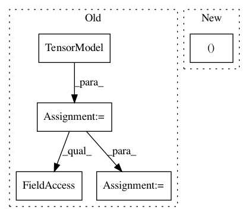

7885c7f254146ca7a78a6a0b50165e1f12ad529a,dipy/reconst/ivim.py,,two_stage,#Any#Any#Any#Any#Any#Any#Any#Any#Any#Any#Any#Any#,279
Before Change
bvecs_ge_split = gtab.bvecs[gtab.bvals > split_b]
gtab_ge_split = gradient_table(bvals_ge_split, bvecs_ge_split.T)
tensor_model = TensorModel(gtab_ge_split)
tenfit = tensor_model.fit(data[..., gtab.bvals > split_b])
D_guess = mean_diffusivity(tenfit.evals)
flat_x0[..., 3] = D_guess
dti_params = tenfit.model_params
After Change
bounds, tol, jac, algorithm, gtol, ftol, eps)
elif routine == "leastsq":
result = _leastsq(flat_data, bvals, flat_x0, ivim_params)
ivim_params.shape = data.shape[:-1] + (4,)
return ivim_params
def get_D_guess(data, gtab, split_b):
In pattern: SUPERPATTERN
Frequency: 3
Non-data size: 5
Instances
Project Name: nipy/dipy
Commit Name: 7885c7f254146ca7a78a6a0b50165e1f12ad529a
Time: 2016-06-24
Author: shahnawaz.ahmed95@gmail.com
File Name: dipy/reconst/ivim.py
Class Name:
Method Name: two_stage
Project Name: nipy/dipy
Commit Name: d6772f18390e5d0100ca443c91a622717e5c886c
Time: 2019-07-22
Author: girard.gabriel@gmail.com
File Name: dipy/tracking/tests/test_life.py
Class Name:
Method Name: test_fit_data
Project Name: nipy/dipy
Commit Name: aac7b54c8d6957786a9aa70e896cef10fe0ab9fe
Time: 2019-07-21
Author: girard.gabriel@gmail.com
File Name: doc/examples/tracking_deterministic.py
Class Name:
Method Name: